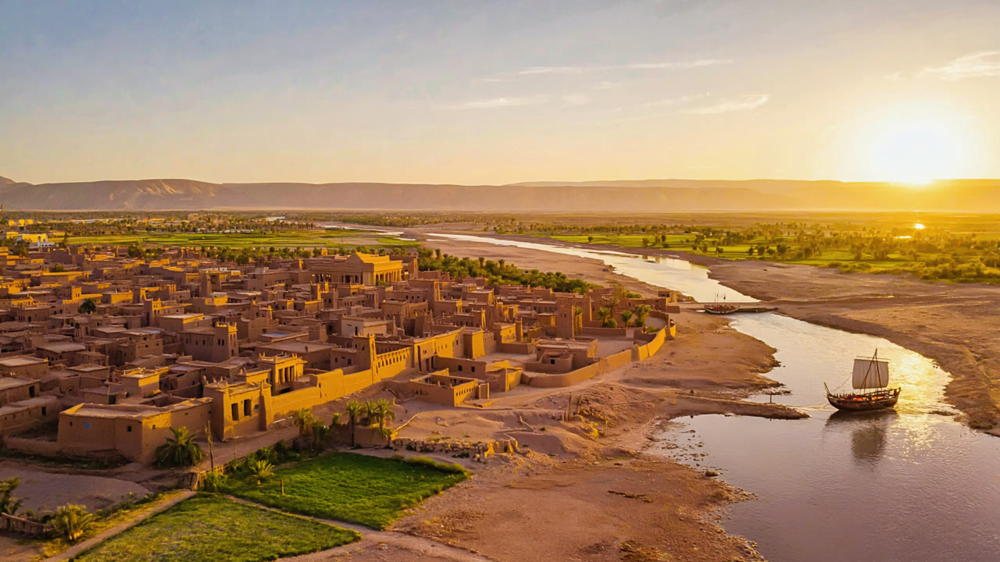
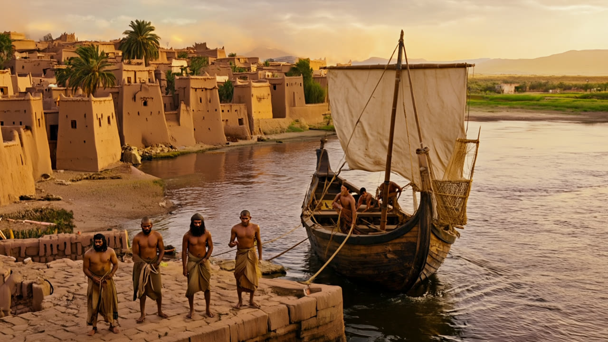
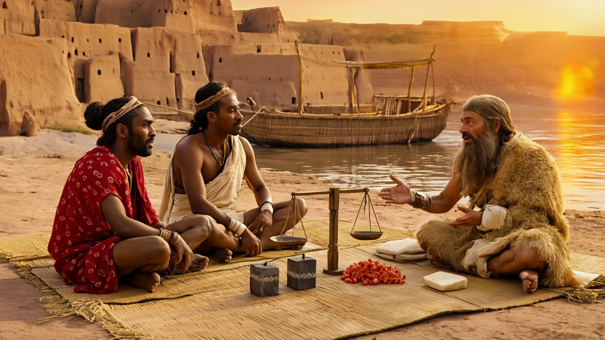
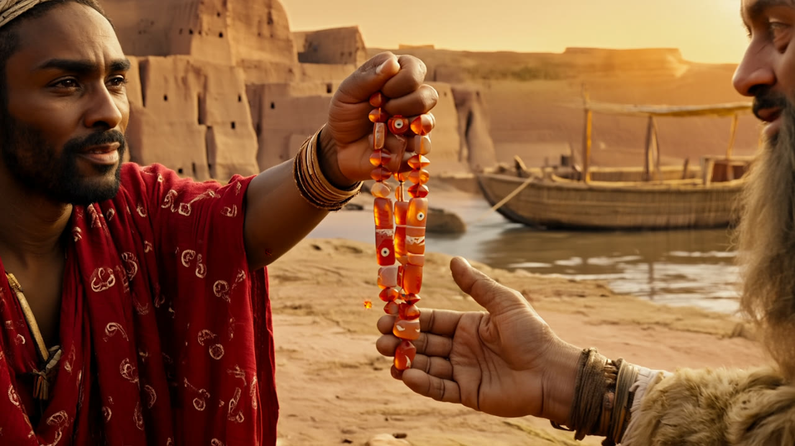
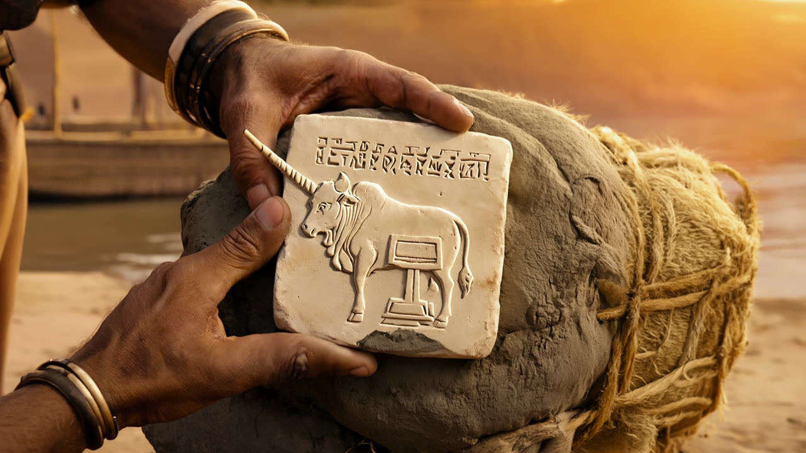
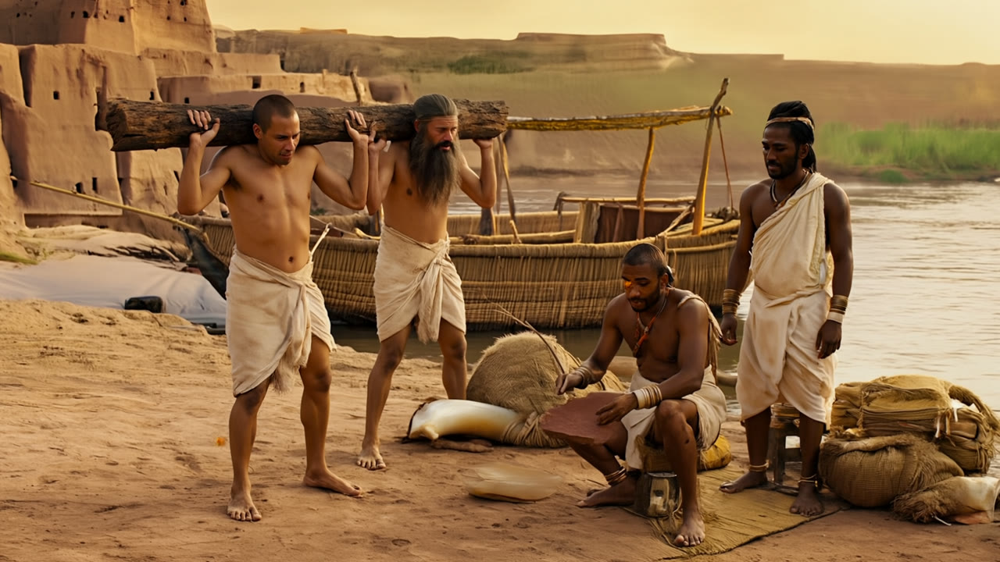

A Ship from Meluhha: storyboard
Six shots, about 60 seconds. Each still becomes a 10-second clip with the camera move written under it. Current film: main page.

Shot A · 0:00From the skyCamera: slow drone descent toward the boat.Good: city, river, fields, boat. Check: faint hills on the horizon (the real plain is flat).
Shot B · 0:10DockingCamera: push-in as the boat glides in, sail lowered, one sailor steps ashore.Good: realistic workers and boat. Check: workers stand in a posed row; hills again in the distance.
Shot C · 0:20TradingCamera: almost still; a weight is set on the balance, the merchant nods.Good: Meluhhans and Sumerian clearly distinct; balance, cube weights, beads. Check: weights drawn larger than the real 1–3 cm cubes.
Shot D · 0:30Carnelian beadsCamera: very slow push-in as the buyer turns a bead.Good: natural faces and hands, eye-pattern beads.
Shot E · 0:40Sealing a baleCamera: seal pressed into clay, lifted to show the impression.Good: real use of Indus seals (sealing bales). Check: seal is far too big (real ones are about 3 cm), and the horn sticks out past the edge.
Shot F · 0:50Unloading ivory and timberCamera: workers walk past with the log, slow pull-back.Good: natural workers, tusk, merchant watching. Check: the tablet looks like a large red slab rather than a small clay tablet.